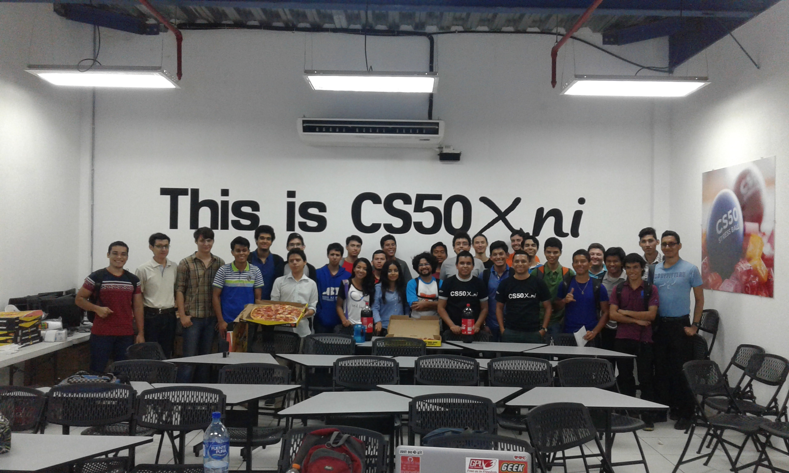

On Tuesday, March 14th, the Fedora Nicaragua community and the CS50x.ni staff, with the support from Fundación UNO and the Fedora Project, we had the opportunity to meet to see a series of lectures in which the speakers shared their experience using Free Software, the importance and benefits of the different software tools used in the CS50x.ni course. The lectures were aimed for anyone who is taking the CS50x.ni course currently, or who wants to take it in the future or people interested in learning more about free software and more specifically about the Fedora Project.
The meeting was in the basement of the north wing of the Rigoberto López Pérez building of the National University of Engineering in the Simón Bolívar Campus, in the classrooms dedicated to the CS50x.ni (Coding) project.
The talks began at 9:00 AM, as the first presentation we had a "Fedora Project Overview" facilitated by Eduardo Mayorga. Eduardo a Fedora Project Ambassador, Package Maintainer and is currently part of the group of students who are participating in the course CS50x.ni, explained to us what the Fedora Project is about, its mission and vision as a Free Software project, and also gave us a look at what is being part of this community both locally and internationally.

The second talk was given by Neville Cross, Founder and Leader of Fedora Community in Nicaragua. In his talk Neville motivated the attendees to know more about the importance of mastering the command line tools shipped in all the GNU/Linux distributions. Neville made a demonstration on the use of SSH remote management tools in which he showed how to access a computer connected in the same network from a second computer through a command line and talked about some tools that allow monitoring resources, all this remotely.
The third talk was facilitated by Daniel Drake. Daniel is an operating system developer originally from the UK settled in Nicaragua for 8 years. Daniel came as part of Project One Laptop per Child, the talk was related to "Employment Opportunities related to Linux after CS50", in which Daniel shared his experiences and advice acquired over 15 years of experience as a developer and contributor of Free Software projects such as The GNOME Project. Daniel has also been a leader of the development team Linux Kernel for the Gentoo distribution, and shared tips on being part of Free Software projects and emphasized the benefits of contributing to projects through the experience one acquires by working with talented people from all over the world.
In the last block of talks Porfirio Páiz, contributor of the Fedora Projet and student of the CS50x.ni course, gave 3 examples of how the Fedora distribution can be a very useful tool for students of the CS50x.ni with demonstrations on the use of tools such as the "Getting started with Git" talk where he made a small demo about the workflow for managing code version control system. In a second talk he did, "A brief introduction to Docker" he talked to us about how this tool is being used in the CS50x.ni to provide an easy and simple programming environment for those who are taking the course. And in a third talk he shared about how to set up a "Development Workstation with Fedora". In this talk Porfirio spoke about one of the products offered by the Fedora Project for all those who are focused on achieving a work environment with the objective of materializing their software project ideas using Fedora as a basis to build them, making use of the different programming languages available between the Fedora software repositories, as well as other tools.
And as a final surprise, the members of Fedora Nicaragua, together with the staff of the CS50x.ni, shared with the audience a pleasant time full of talks, exchanges of ideas and experiences accompanied by cold drinks and delicious pizza, which was kindly sponsored by the Fedora Project.
The Fedora Project Users and Contributors Community are keen to continue with these sessions of talks and conversations focused on topics that are of great help and interest to those who are entering the wonderful world of programming thanks to the CS50x.ni.
Sorry for the late post here is a happy Hot Dog: